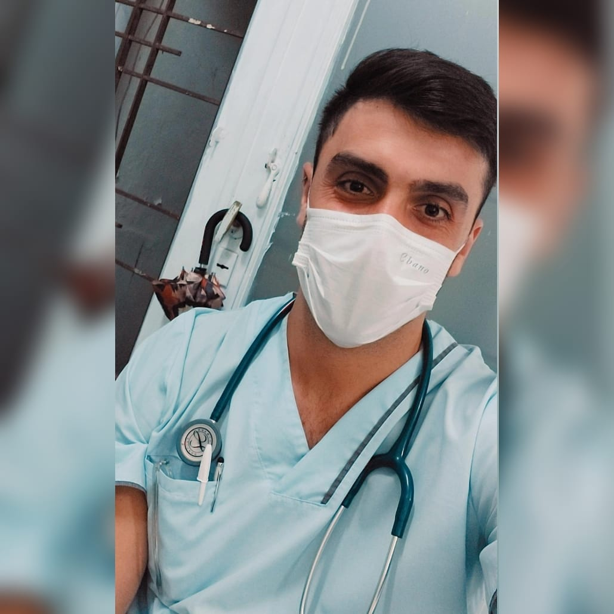
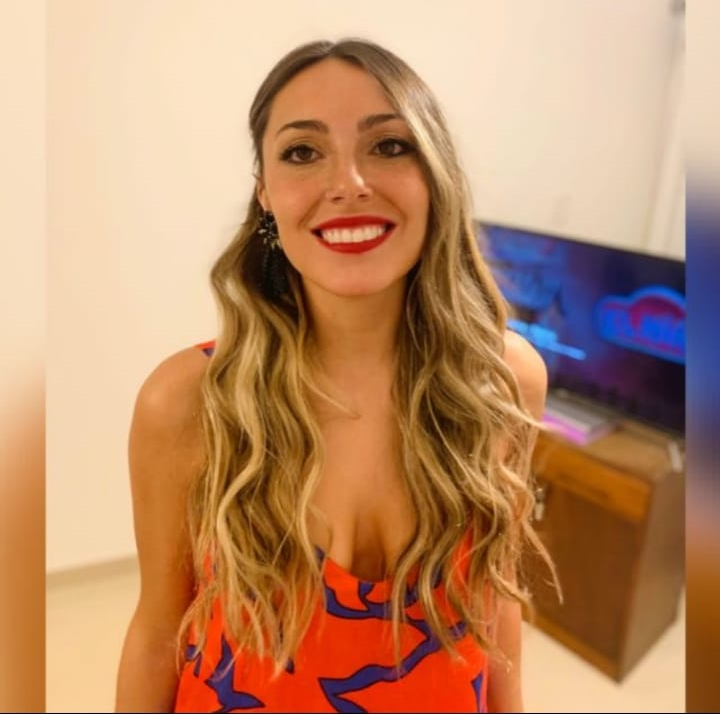

En el año 2020 surgió, luego de varios años de análisis, la idea de crear una clínica de menor envergadura que un Hospital pero de igualmente forma que de las mismas resoluciones que éste. Se comenzó por la atención al público mediante consultorios externos para luego adquirir el servicio de Emergencias. Un año más tarde, debido a la afluencia de pacientes a la misma, se creó el servicio de Internación con un equipo médico y de enfermería de primera calidad. Sumado a esto y para finalizar la estructura ideada, se incluyó el servicio de Telemedicina, el cual apunta a mejorar la calidad de atención de los pacientes para que los mismos a su vez, no tengan largas horas de espera ni movilizaciones innecesarias. Brinda la mejor atención, con los mejores profesionales desde la comodidad del hogar. Al día de hoy, nuestra clínica permanece en funcionamientos las 24hs del día, los 7 días de la semana y los 365 días del año para quien requiera una atención médica.
Fundadores

Dr. Gaspar Pérez Salas, fundador y director de la clínica. Médico y Residente de la especialidad Cirugía General. 26 años. Tucumán, Argentina. Fue quien puso la última palabra para que se comenzara el proyecto y se encargó de la disposición y organización de los sectores de la misma para un flujo de pacientes organizado y que garantice la rápidez de atención.

Lic. Camila Caram, co-fundadora e ideologa de la clínica. Lic. en Psicología y Diplomada en el Área de RRHH. 24 años. Tucumán, Argentina. Fue quien analizó por más de 2 años la zona en donde convendría armar una clínica que esté al alcance de las necesidades de los pacientes.
Equipo Médico
Juan Pérez, sub-director médico y encargado del departamento de Clínica Médica. Es médico clínico especialista en Clínica Familiar con una trayectoria en el rubro por más de 20 años. Encargado de coordinar los departamentos que conllevan al diagnóstico oportuno de los pacientes.
Nicola Jiménez, cirujano general especialista en Cirugía Plástica. Encargado del departamento de Cirugía en la Clínica Dr. Pérez Salas, asegura la mayor organización e higiene del quirófano. Realiza hasta 15 cirugías por día, teniendo un promedio mayor de 4.000 cirugías al año.
Humberto Ochoa, Gineco-Obstetra especialista en Fertilidad. Encargado del departamento de Ginecología y Obstetricia en donde se brinda la atención completa durante el embarazo tanto en el diagnóstico, seguimiento, parto y en la etapa pueperal. Magister en Parto Podálico.
Equipo Enfermería
Ana López, 37 años. Directora de Enfermería, encargada de la coordinación de los equipos para brindar la atención completa de los pacientes durante la estadía en el servicio de internación.
Michaelle Ibañez, 35 años. Encargado del staff de enfermería en el servicio de Emergencias. Realizó distintos cursos orientados en la reanimación del paciente crítico como, tambíen, la Especialidad en Emergencias Médicas dictaminada por La Cruz Roja Argentina.
Gerencia
Dr. Gaspar Pérez Salas, fundador y director de la clínica. Médico y Residente de la especialidad Cirugía General. 26 años. Tucumán, Argentina.
Lic. Camila Caram, co-fundadora e ideologa de la clínica. Lic. en Psicología y Diplomada en el Área de RRHH. 24 años. Tucumán, Argentina.